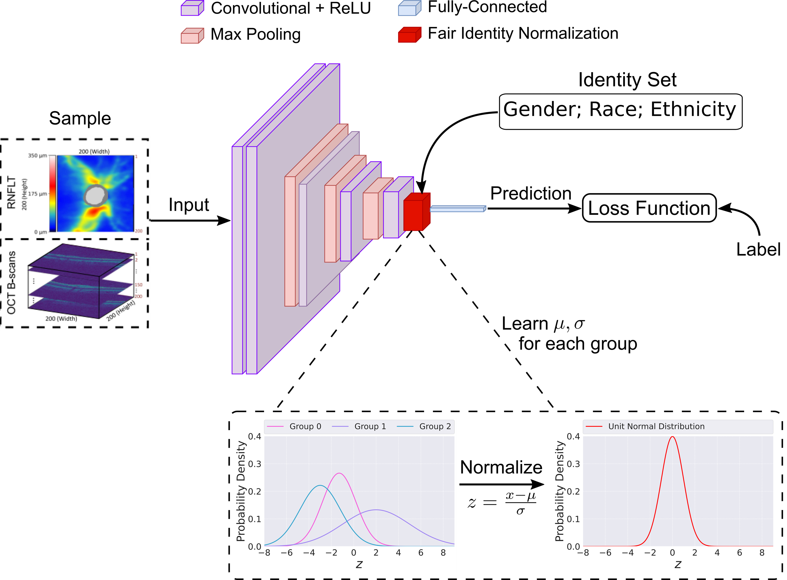
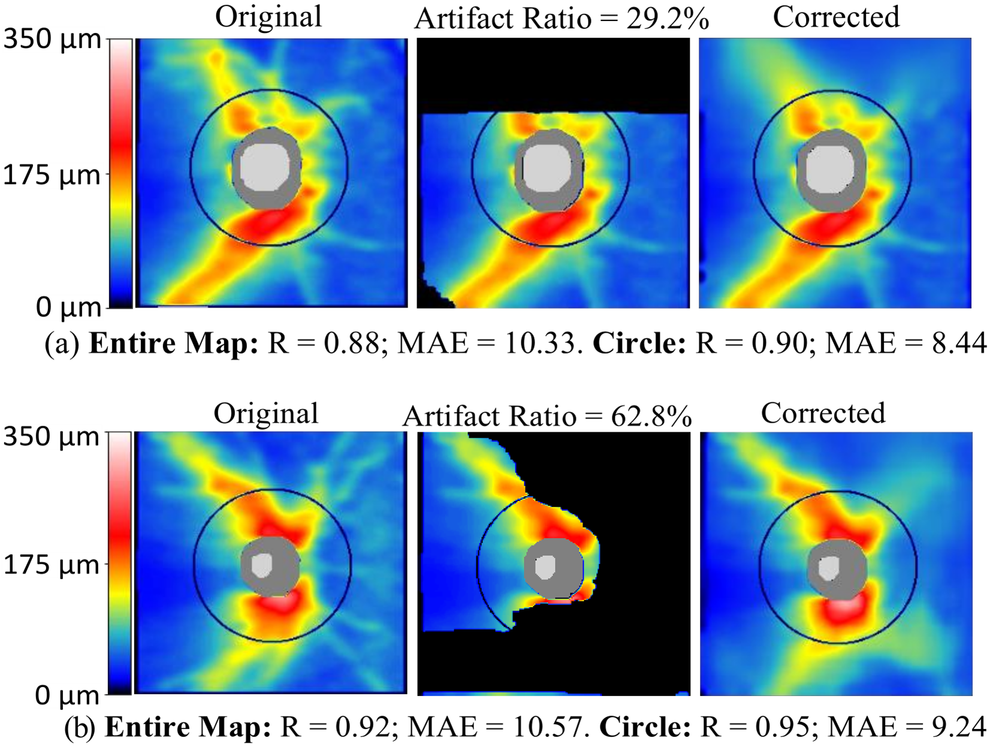
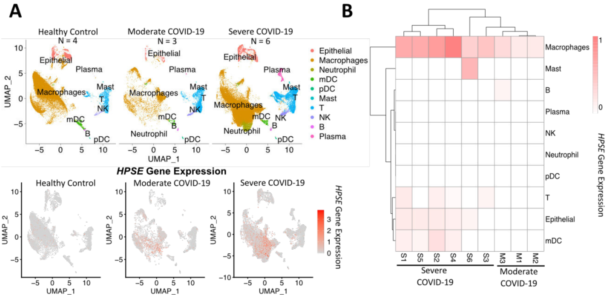
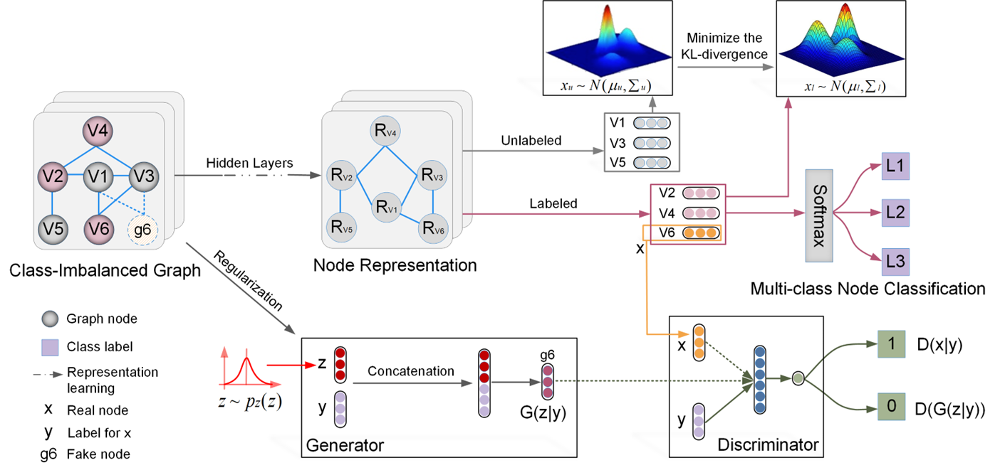
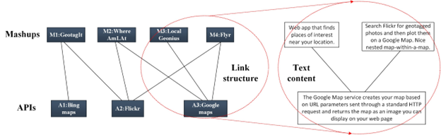

Selected Projects
- Equitable AI for Human Disease Screening
Fairness in artificial intelligence models has gained significant attention in recent years, especially in the area of medicine, as fairness in medical models is critical to people's well-being and lives. We curated large-scale medical datasets with rich demographic information such as age, gender, race, ethnicity, preferred language, marital status, etc., to facilitate the development of equitable AI. We proposed novel AI models with quantifiable metrics to improve the fairness of AI for eye disease screening and medical image segmentation. . - Luo* Y, Tian* Y, Shi* M, Elze T, Wang M, Harvard Glaucoma Fairness: A Retinal Nerve Disease Dataset for Fairness Learning and Fair Identity Normalization . arXiv preprint arXiv:2306.09264. 2023
- Luo* Y, Tian* Y, Shi* M, Elze T, Wang M, Harvard Eye Fairness: A Large-Scale 3D Imaging Dataset for Equitable Eye Diseases Screening and Fair Identity Scaling . https://arxiv.org/abs/2310.02492. 2023
- Tian* Y, Shi* M, Luo* Y, Kouhana, A., Elze, T. and Wang, M, FairSeg: A Large-scale Medical Image Segmentation Dataset for Fairness Learning with Fair Error-Bound Scaling . arXiv preprint arXiv:2311.02189. 2023
- AI for Medical Data Cleaning
The advent of diagnostic methods such as optical coherence tomography (OCT) and standard automated perimetry has greatly enhanced the efficacy of identifying and monitoring ocular diseases. Although the data generated by these techniques offer valuable insights into retinal structural damage and functional vision loss, they are inherently susceptible to artifacts and noise. These factors can potentially lead to imprecise and unreliable diagnostic results. We have pioneered an advanced deep learning system tailored for OCT artifact rectification. - Shi M, Lokhande A, Fazli M, Sharma V, Tian Y, Luo Y, Pasquale L, Elze T, Boland M, Zebardast N, Artifact-Tolerant Clustering-Guided Contrastive Embedding Learning for Ophthalmic Images in Glaucoma . 2023. IEEE Journal of Biomedical and Health Informatics
- Shi M, Sun A, Lokhande A, Tian Y, Luo Y, Elze T, Shen L, Wang M, Artifact Correction in Retinal Nerve Fiber Layer Thickness Maps Using Deep Learning and Its Clinical Utility in Glaucoma . 2023. Translational Vision Science & Technology
- Machine learning for disease screening, therapy discovery and tumor microenvironment analysis
We aim to devise machine learning techniques to uncover regulatory patterns within the breast cancer microenvironment, forecasting hematopoietic stem cell mobilization, and identifying novel dual-action therapeutic strategies for COVID-19. - Xiang J, Shi M, Fiala, M.A., Gao, F., Rettig, M.P., Uy, G.L., Schroeder, M.A., Weilbaecher, K.N., Stockerl-Goldstein, K.E., Mollah, S. and DiPersio, J.F., Machine Learning-Based Scoring Models to Predict Hematopoietic Stem Cell Mobilization in Allogeneic Donors. (Blood Advances). 2022.
- Xiang J, Lu M, Shi M, Cheng X, Kwakwa K, Davis J, Su X, Bakewell S, Zhang Y, Fontana F, Heparanase Blockade as a Novel Dual-Targeting Therapy for COVID-19. (Journal of Virology). 2022.
- Low-dimensional representation learning of networked data and systems
Many real-world systems are organized in the form of graph such as social networks and protein-protein interaction networks. It is fundamental to first learn the low-dimensional vector representations of graph nodes in order to perform network analytic tasks such as node classification, clustering and link prediction. Network representation learning aims to represent each data node present in the network as a low-dimensional vector with preserved topological relationships between nodes. In this direction, we have developed several deep learning algorithms for network representation learning. - Shi M, Huang Y, Zhu X, Tang Y, Y Zhuang, Liu J, GAEN: Graph Attention Evolving Networks . International Joint Conference on Artificial Intelligence (IJCAI-21). 2021.
- Shi M, Tang Y, Zhu X, Wilson D, Liu J, Multi-Class Imbalanced Graph Convolutional Network Learning . International Joint Conference on Artificial Intelligence (IJCAI-20). 2020.
- Shi M, Tang Y, Zhu X, Topology and Content Co-Alignment Graph Convolutional Learning. IEEE Transactions on Neural Networks and Learning Systems (TNNLS). 2021.
- Shi M, Tang Y, Zhu X, MLNE: Multi-label network embedding. IEEE Transactions on Neural Networks and Learning Systems (TNNLS). 2019, 31(9), pp.3682-3695.
- Large-scale Web service management and computing
The appearance of service-oriented architectures (SOAs) has greatly changed the fashion of developing software systems from monolithic, static and centralized structures to modular, dynamic and distributed ones. On the other hand, the accumulation of a broad range of Web services on the Internet has posed critical challenges on many real-world problems such as service classification or clustering service discovery service composition and service annotation. Overcoming these problems would substantially ease the development process of distributed software applications. In this direction, we aim to develop efficient algorithms to facilitate large-scale Web service management and recommendation. - Shi M, Liu J, Zhou D, Tang M, Cao B, WE-LDA: A Word Embeddings Augmented LDA Model for Web Services Clustering . International Conference on Web Services (ICWS). 2017.
- Shi M, Liu J, Zhou D, Tang M, Xie F, Zhang T, A Probabilistic Topic Model for Mashup Tag Recommendation . International Conference on Web Services (ICWS). 2016.
- Shi M, Liu J, Tang Y, Zhuang Y, Zhu X, Web Service Embedding with Link Prediction and Convolutional Learning. IEEE Transactions on Services Computing (TSC). 2021.
- Shi M, Liu J, Zhou D, Tang Y, A Topic-Sensitive Method for Mashup Tag Recommendation Utilizing Multi-Relational Service Data. IEEE Transactions on Services Computing (TSC). 2021.

Relevant Conference Papers:
Relevant Papers:
Relevant Journal Paper:
Relevant Conference Papers:
Relevant Conference Papers: